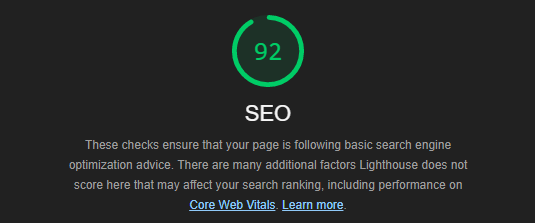
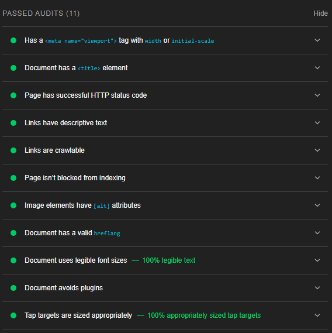
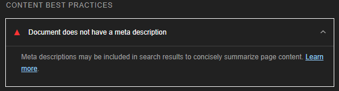
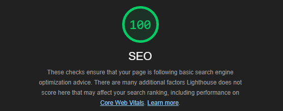
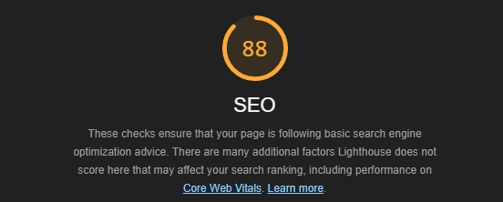
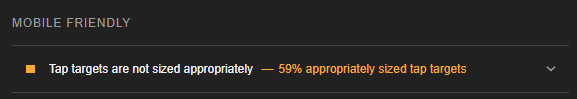
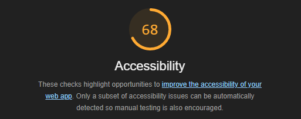
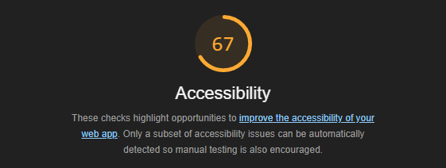
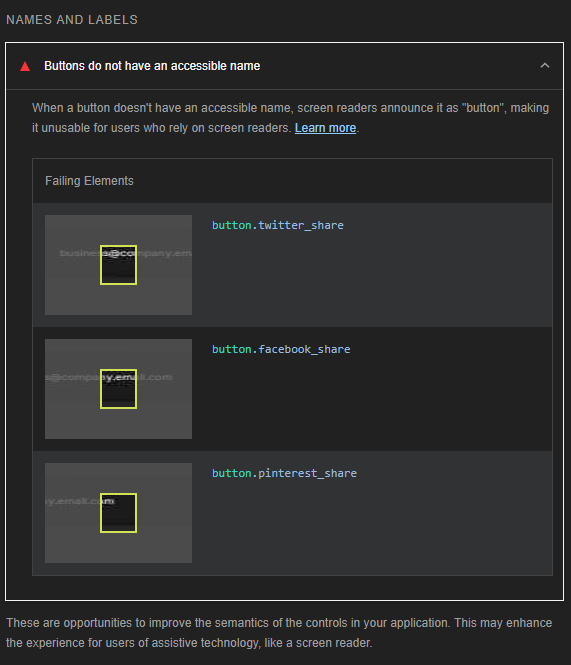
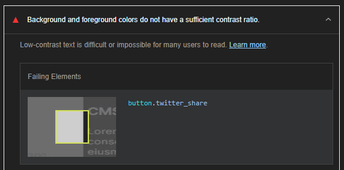

SEO, UU og Heuristisk evaluering av nettstedet
SEO
For evaluering av SEO bruker jeg Google Lighthouse. Jeg kjører lighthouse, ser på scoren, hva som er bra, hva som er dårlig, og drar konklusjoner ut i fra det.
Den initielle SEO scoren til hjemmesiden er 92. Nedenfor ser du alle de positive trekkene til siden:
Det eneste som holdt siden tilbake fra en bedre score var manglende meta description tag.
Etter å ha lagt til meta description tag gikk SEO scoren til 100, som du kan se nedenfor.
UU og SEO siden hadde en score på 88, så jeg skjønte at her var det mer en bare en manglende meta tag.
Problemet viste seg å være at kildelista var for vanskelig å navigere på telefon fordi linkene var for nærme hverandre.
Etter å ha lagt til litt margin mellom linkene, løste problemet seg og SEO scoren gikk til 92. Det eneste som manglet var meta description som på hjemmesiden. Jeg skjønte nå at meta description kom til å dukke opp gang på gang, så jeg la det til på alle sidene. Jeg justerte også kildelista under CMS artikkelen siden den hadde samme format. Etter disse endringene oppnådde alle sidene 100 i SEO score, og jeg gikk videre til UU.
UU
  Initiell UU score er ganske skuffende. Hovedproblemet var at knappene jeg brukte til å dele på sosiale mediae hadde ingen faktisk tekst i seg, bare i elementer i form av ikoner fra FontAwesome. Jeg løste dette ved å legge til tekst i button, sette font size til 0 slik at det ikke vises, og deretter style ikonet separat.
Neste problem var at det var lite kontrast mellom Twitter og Pinterest knappene og den daværende gråe bakgrunnen. Her var det jo bare å gjøre knappene mørkere, men det var litt utfordrende å beholde en blåfarge som ligner Twitter sin og fortsatt ha god nokk kontrast.
Etter alle endringene gikk UU scoren til opp til 88, som jeg var fornøyd med.
Heuristisk evaluering
For å gjennomføre heuristisk evaluering, leste jeg gjennom de 10 tommelfingelreglene fra Nielsen Norman group og plukket ut 4 som jeg syntes passet til min nettside. Disse er #3: User control and freedom, #4: Consistency and standards, #6: Recognition rather than recall, og #8: Aesthetic and minimalist design. Resten av reglene mente jeg selv var urelevante til innholdet på min nettside.
#3: User control and freedom
"Users often perform actions by mistake. They need a clearly marked 'emergency exit' to leave the unwanted action without having to go through an extended process.
When it's easy for people to back out of a process or undo an action, it fosters a sense of freedom and confidence. Exits allow users to remain in control of the system and avoid getting stuck and feeling frustrated."
Siden har ingen kompliserte funksjoner utenom hamburgermenyen (en modifisert versjon av ackarlses meny): den tar opp hele skjermen og kan oppleves som overveldende for noen brukere. Menyen er markert med en stor X på toppen for å indikere at denne knappen lukker menyen. X er den tradisjonelle måten å markere exit knapper på i data og bør være lett gjennkjennelig.
#4: Consistency and standards
"Users should not have to wonder whether different words, situations, or actions mean the same thing. Follow platform and industry conventions.
Jakob's law states that people spend most of their time using digital products other than yours. Users' experiences with those other products set their expectations. Failing to maintain consistency may increase the users' cognitive load by forcing them to learn something new."
Dette kan tilegnes til veldig mye, men jeg tengte på det som hvordan brukeren interagerer med nettsiden, ala navigasjon. Navigasjon er logisk og har lignende layout som andre sider med lignende innhold (e.g artikler). Den er også lik over hele nettstedet. Alle sidene på nettstedet har samme flyt: knapper og f.eks kildelisten på artikkelsidene er på samme sted. Artikkelkortene er standardisert og lik uansett hvor du er.
#6: Recognition rather than recall
"Minimize the user's memory load by making elements, actions, and options visible. The user should not have to remember information from one part of the interface to another. Information required to use the design (e.g. field labels or menu items) should be visible or easily retrievable when needed.
Humans have limited short-term memories. Interfaces that promote recognition reduce the amount of cognitive effort required from users."
Navigasjon, flyt, og elementer som artikkelkort er standardisert og ligger på samme sted uansett hvor du er. Informasjonen presentert i tabellene kan fordøyes uten hjelp fra selve artikkelen. Alle navigasjonselementer er tydelig utmerket og skiller seg fra resten av innholdet.
#8: Aesthetic and minimalist design
"Interfaces should not contain information that is irrelevant or rarely needed. Every extra unit of information in an interface competes with the relevant units of information and diminishes their relative visibility.
This heuristic doesn't mean you have to use a flat design — it's about making sure you're keeping the content and visual design focused on the essentials. Ensure that the visual elements of the interface support the user's primary goals."
Nettsiden er kanskje litt kjedelig når det gjelder visuell design, men den er effektiv og tar ikke fokus vekk fra innholdet. Designet har god kontrast, flyter fint, er lesbar, og enkelt. Jeg gjorde 1 endring når jeg evaluerte siden med denne regelen i bakhodet, og det var å gjøre artiklene tynnere; før var de veldig bred, og det egner seg ikke til bra lesbarhet.
Oppsummering - Tabell
Links i kildeliste for liten og vanskelig å treffe La til meta description på alle sider
Justerte mellomrom mellom links i kildeliste 100 UU 67-68 Sosiale media knapper manglet tekst (ikke bra for skjermlesere)
Sosiale media knapper hadde lite kontrast i forhold til bakgrunn og hvite ikoner La til usynlig tekst ved å sette font size til 0, stylet ikon separat for å bevare utsene
Justerte bakgrunnsfargen på sosiale media knapper 88 Heuristisk Middels-positiv Nettsiden er “basic” og har få avanserte funksjoner
Nettsiden ble designet med gode designprinsipper i bakhodet (kontrast, lesbarhet, flyt) Justerte bredden på flere artikler slik at det er litt mer lesbar
Gjorde artikkelkort rekkefølge uniform på alle sider slik at artikkelen som er lengst til venstre i nav meny også er kortet lengst til venstre Positiv
Tilgjengelighetserklæring
I tillegg til det som står i tilgjengelighetserklæringen så møter nettsiden krav 1.4.6 Contrast (Enhanced) og krav 2.4.8 Location, 2 AAA krav.
"1.4.6 Contrast (Enhanced) - Level AAA
The visual presentation of text and images of text has a contrast ratio of at least 7:1, except for the following:
Large Text: Large-scale text and images of large-scale text have a contrast ratio of at least 4.5:1;
Incidental: Text or images of text that are part of an inactive user interface component, that are pure decoration, that are not visible to anyone, or that are part of a picture that contains significant other visual content, have no contrast requirement.
Logotypes: Text that is part of a logo or brand name has no contrast requirement".
Dette kravet blir møtt siden nettsiden har et kontrastforhold på 21:1.
"2.4.8 Location - Level AAA
Information about the user's location within a set of Web pages is available".
Nettsiden møter dette kravet ved å fortelle deg hvor du er via en tittel (identisk til sidens navn i nav menyen) på toppen av siden.